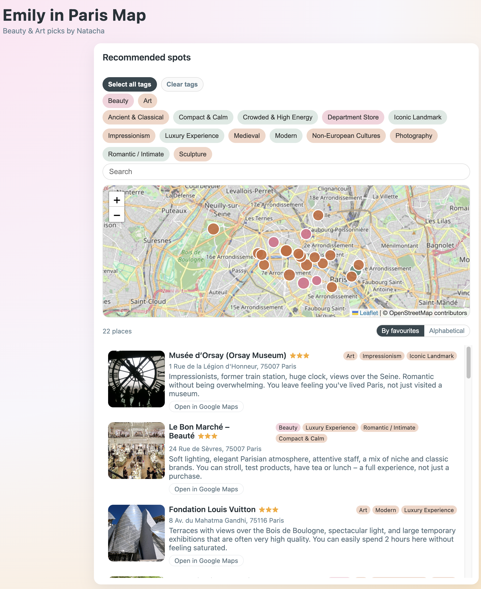

Carte interactive des musées et lieux beauté à Paris, créée sur mesure pour Emily Lutzker, New-Yorkaise de passage. Une sélection personnalisée de plus de 20 adresses — du Louvre à Citypharma — avec des notes honnêtes pour aider à prioriser sans se perdre dans l'infini des guides touristiques.
À partir d'un échange avec Emily sur ses envies (art, beauté, rythme de visite), j'ai sélectionné et annoté chaque adresse : musées (Louvre, Orsay, Pinault Collection…), grands magasins beauté (Le Bon Marché, Printemps Haussmann) et adresses emblématiques (Citypharma, Sephora Champs-Élysées).
En utilisant Leaflet et JavaScript, j'ai construit une carte légère et élégante, pensée pour une utilisatrice mobile en visite.
Données issues d'une curation personnalisée — projet réalisé pour Emily Lutzker (New York)
Sur mesure